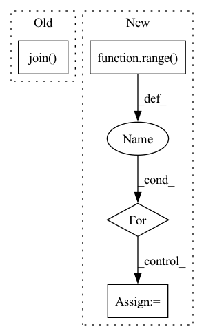

Pattern ID :35071
Before Change
def __getitem__(self, index):
filename = self.imgs[index]
try:
img = self.loader(os.path.join( self.root, filename) )
except:
return torch.zeros((3, 32, 32))
After Change
filenames = random.choice(self.im_list[self.cur_idx], cur_n_views, replace=False)
imgs = torch.zeros(cur_n_views, 3, 128, 128)
try:
for view in range( cur_n_views):
imgs[view,:,:,:] = self.loader(os.path.join(self.root, self.cat_model_list[self.cur_idx][0], self.cat_model_list[self.cur_idx][1], filenames[view]))
if self.transform is not None:
imgs[view,:,:,:] = self.transform(imgs[view,:,:,:])
except:In pattern: SUPERPATTERN
Frequency: 3
Non-data size: 4
Instances Fragment ID: 100134993
Project Name: alex-golts/pytorch-3d-r2n2
Commit Name: 26734669a8887661262dc3f913074922dc7445e8
Time: 2018-05-22
Author: alexgbiz@gmail.com
File Name: dataset.py
M Class Name: Dataset
N Class Name: Dataset
M Method Name: __getitem__(1)
N Method Name: __getitem__(2)
M Parent Class: data.Dataset
N Parent Class: data.Dataset
M File Name: dataset.py
N File Name: dataset.py
M Start Line: 75
M End Line: 84
N Start Line: 90
N End Line: 101
Before Change
import yaml
import os
fs = open(os.path.join( private_config_path, "config.yaml") , encoding="UTF-8")
private_config = yaml.load(fs, Loader=yaml.FullLoader)
dirs = []
if xlabel is None:After Change
scale_dict = {}
if misc_scale_index is None:
misc_scale_index = []
for i in range( len(qualities)):
if i in misc_scale_index:
scale_dict[qualities[i]] = misc_scale[misc_scale_index.index(i)]
else:
scale_dict[qualities[i]] = 1
_, _, lgd, texts = plot_util.plot_results(results, xy_fn= lambda r, y_names: csv_to_xy(r, DEFAULT_X_NAME, y_names,
scale_dict, x_start=x_start, y_bound=y_bound,
remove_outlier=remove_outlier), Fragment ID: 100134992
Project Name: xionghuichen/rlassistant
Commit Name: c960619032588e7490bfcecc6c8aa20a04a0bddf
Time: 2020-12-21
Author: zpcxh95@outlook.com
File Name: RLA/easy_plot/plot_func.py
M Class Name: AnonimousClass
N Class Name: AnonimousClass
M Method Name: plot_res_func(17)
N Method Name: plot_res_func(19)
M Parent Class:
N Parent Class:
M File Name: RLA/easy_plot/plot_func.py
N File Name: RLA/easy_plot/plot_func.py
M Start Line: 91
M End Line: 173
N Start Line: 95
N End Line: 150
Before Change
temp_title_right.append(word)
// Join the elements in the list to create the strings
title_left = " ".join( temp_title_left)
title_right = " ".join(temp_title_right)
// Append the newly created row (title_left, title_right, label) to the new dataframe
norm_computers = norm_computers.append(pd.DataFrame([[title_left, title_right, row.label]], columns=column_names))After Change
norm_data = pd.DataFrame(columns = column_names)
// Iterate over the original dataframe (I know it is slow and there are probably better ways to do it)
iloc_data = orig_data.iloc
for idx in range( len(orig_data)):
row = iloc_data[idx]
title_left = remove_stop_words(row.title_left)
title_right = remove_stop_words(row.title_right)
Fragment ID: 100134991
Project Name: mascerade/supervised-product-matching
Commit Name: fbed706217107d3874baa2b6d2f38a94f0ca2b2f
Time: 2020-08-24
Author: Ultimi450@gmail.com
File Name: src/preprocessing.py
M Class Name: AnonimousClass
N Class Name: AnonimousClass
M Method Name: preprocessing(1)
N Method Name: preprocessing(1)
M Parent Class:
N Parent Class:
M File Name: src/preprocessing.py
N File Name: src/preprocessing.py
M Start Line: 29
M End Line: 64
N Start Line: 46
N End Line: 55